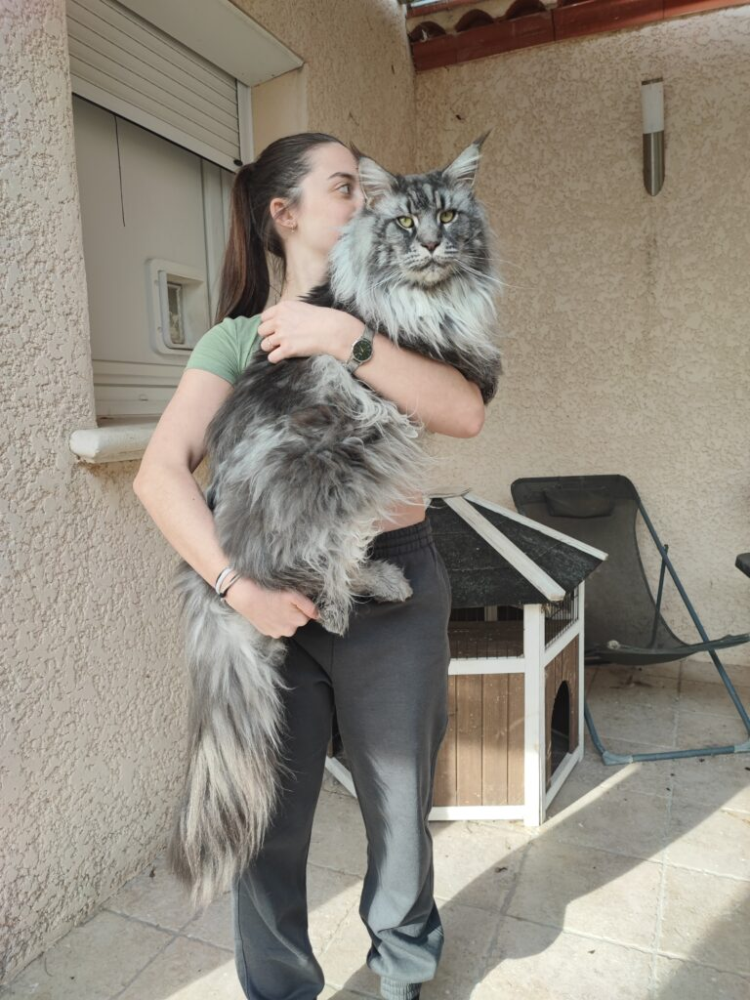
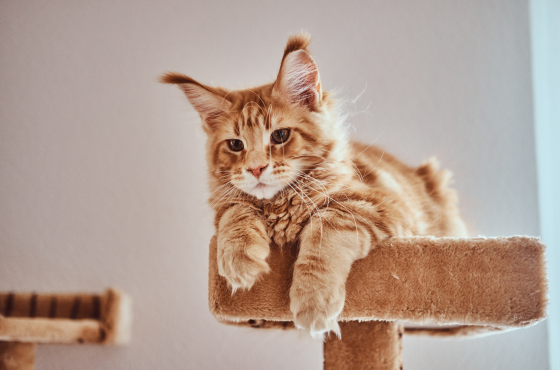
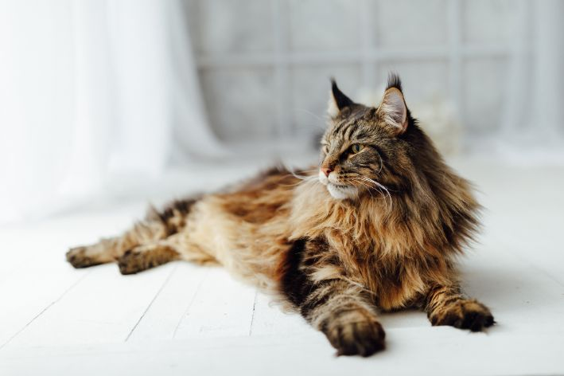
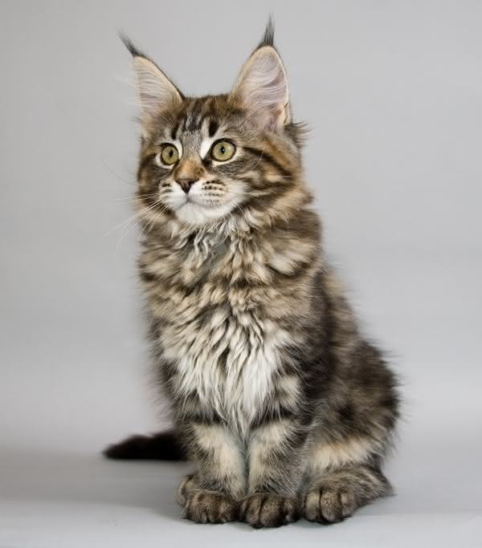
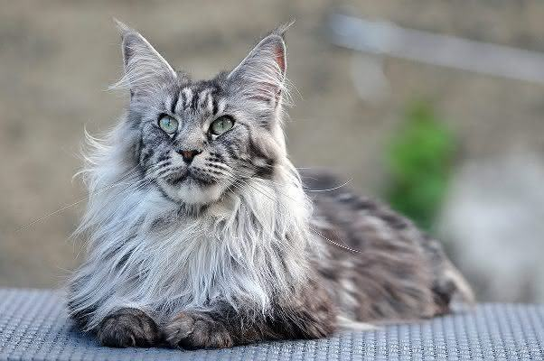

|
MAINE COON
|
||
Carácter del Maine Coon |
Origen |
Aspecto |
|
Los maine coon tienen un carácter dulce y son muy juguetones y amistosos.
Les gusta mucho la compañía humana y son buenas mascotas.
Tal vez debido a su origen humilde, están acostumbrados a dormir a la intemperie,
acurrucados en los lugares más insospechados. Disfrutan con la vida al aire libre
y les gusta poder trepar y simular la caza. Los maine coon destacan por el encantador
gorjeo bajo que emiten.
|
País de origen: Estados Unidos Los ancestros del gato maine coon eran gatos de pelo largo que llevaron al estado de Maine (EE.UU.) los marineros en 1850. Aquellos gatos se aparearon con los gatos locales de pelo corto. Los descendientes fueron unos gatos grandes y de constitución fuerte, con pelajes semilargos y colas en forma de cepillo que recordaban a las de los mapaches (racoon, en inglés); de ahí el nombre de maine coon. Estos gatos desarrollaron unos pelajes densos y gruesos para soportar los inviernos extremos de Maine. Ya en la década de los sesenta se realizaron exposiciones especiales sobre los gatos maine coon y la raza se popularizó como animal de compañía. El maine coon fue importado al Reino Unido en 1980. |
Los gatos maine coon, considerada la mayor de todas las razas de gatos, tienen un
cuerpo de fuerte musculatura y patas sólidas. Tiene un hocico cuadrado y unas
orejas grandes que se sostienen anchas y erguidas.
El pelaje es largo y grueso, con un manto inferior cubierto por un abundante
pelo impermeable y brillante. El pelo de la cabeza, del cuello y del torso es
más corto y aumenta de longitud al bajar por el lomo, los costados y la cola.
El pelo del vientre y de las patas traseras es abundante y lanudo.
Tiene una gorguera que empieza en la base de las orejas y es más densa en
los machos que en las hembras. El pelo de la cola es largo y suelto.
Las orejas presentan mechones en las puntas.
Las zarpas tienen también unos mechones que les dan el aspecto de raquetas
para la nieve. El maine coon puede presentar más de 30 colores.
Los ojos pueden ser verdes, dorados o cobrizos; en los maine coon blancos
es posible encontrar ojos azules o de distinto color cada uno.
|
 |
|
 |
 |
 |
 |
Salud |
Nutrición |
Aseo |
|
La raza de gato maine coon parece tener una alta prevalencia de una enfermedad cardíaca
denominada miocardiopatía hipertrófica. También muestra una prevalencia elevada
de displasia de cadera. Pregunta al criador sobre estos aspectos antes de comprar.
|
Cada gato es único y tiene sus propios gustos, aversiones y necesidades particulares en
lo que respecta a la comida. Sin embargo, los gatos son carnívoros y deben obtener 41
nutrientes diferentes y específicos de los alimentos que ingieren.
La proporción de estos nutrientes variará según la edad, el estilo de vida y la salud en
general, por lo que no sorprende que un gatito enérgico y en crecimiento necesite un
equilibrio de nutrientes diferente en su dieta que un gato senior menos activo.
Otras consideraciones que deben tenerse en cuenta son darle la cantidad adecuada de
comida para mantener el <estado corporal ideal> según las pautas de alimentación y
atender las preferencias individuales por lo que respecta a las recetas de comida
húmeda o seca.
|
Teniendo en cuenta la longitud del pelaje, el gato maine coon se las apaña bastante bien,
pero no por eso deja de necesitar un acicalado frecuente, además del baño, para mantenerlo
en buenas condiciones. Como con todos los gatos, se recomienda la vacunación regular y realizar
un control antiparasitario.
|